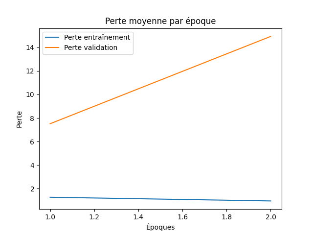
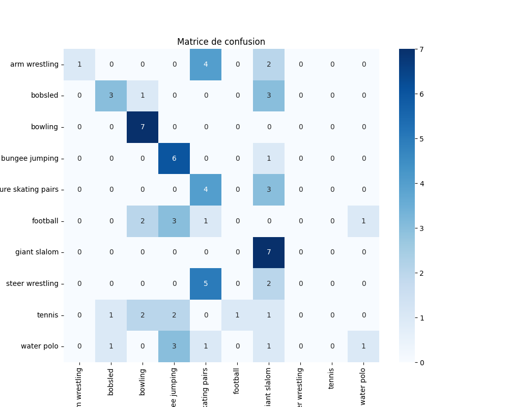
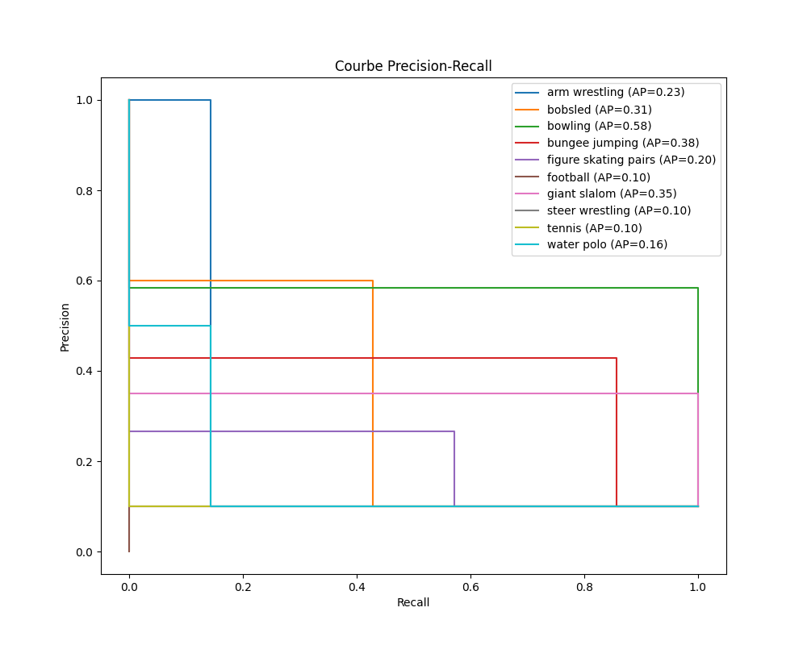

Rapport d'Évaluation du Modèle
Métriques
{
"accuracy": 0.4142857142857143,
"precision_weighted": 0.37285714285714283,
"recall_weighted": 0.4142857142857143,
"f1_score_weighted": 0.3162647781068834,
"cohen_kappa": 0.3492063492063492,
"mcc": 0.37114748466533654,
"classification_report": {
"arm wrestling": {
"precision": 1.0,
"recall": 0.14285714285714285,
"f1-score": 0.25,
"support": 7.0
},
"bobsled": {
"precision": 0.6,
"recall": 0.42857142857142855,
"f1-score": 0.5,
"support": 7.0
},
"bowling": {
"precision": 0.5833333333333334,
"recall": 1.0,
"f1-score": 0.7368421052631579,
"support": 7.0
},
"bungee jumping": {
"precision": 0.42857142857142855,
"recall": 0.8571428571428571,
"f1-score": 0.5714285714285714,
"support": 7.0
},
"figure skating pairs": {
"precision": 0.26666666666666666,
"recall": 0.5714285714285714,
"f1-score": 0.36363636363636365,
"support": 7.0
},
"football": {
"precision": 0.0,
"recall": 0.0,
"f1-score": 0.0,
"support": 7.0
},
"giant slalom": {
"precision": 0.35,
"recall": 1.0,
"f1-score": 0.5185185185185185,
"support": 7.0
},
"steer wrestling": {
"precision": 0.0,
"recall": 0.0,
"f1-score": 0.0,
"support": 7.0
},
"tennis": {
"precision": 0.0,
"recall": 0.0,
"f1-score": 0.0,
"support": 7.0
},
"water polo": {
"precision": 0.5,
"recall": 0.14285714285714285,
"f1-score": 0.2222222222222222,
"support": 7.0
},
"accuracy": 0.4142857142857143,
"macro avg": {
"precision": 0.3728571428571429,
"recall": 0.4142857142857143,
"f1-score": 0.31626477810688336,
"support": 70.0
},
"weighted avg": {
"precision": 0.37285714285714283,
"recall": 0.4142857142857143,
"f1-score": 0.3162647781068834,
"support": 70.0
}
}
}
Loss Curve.Png

Confusion Matrix.Png

Normalized Confusion Matrix.Png

Precision Recall Curves.Png
